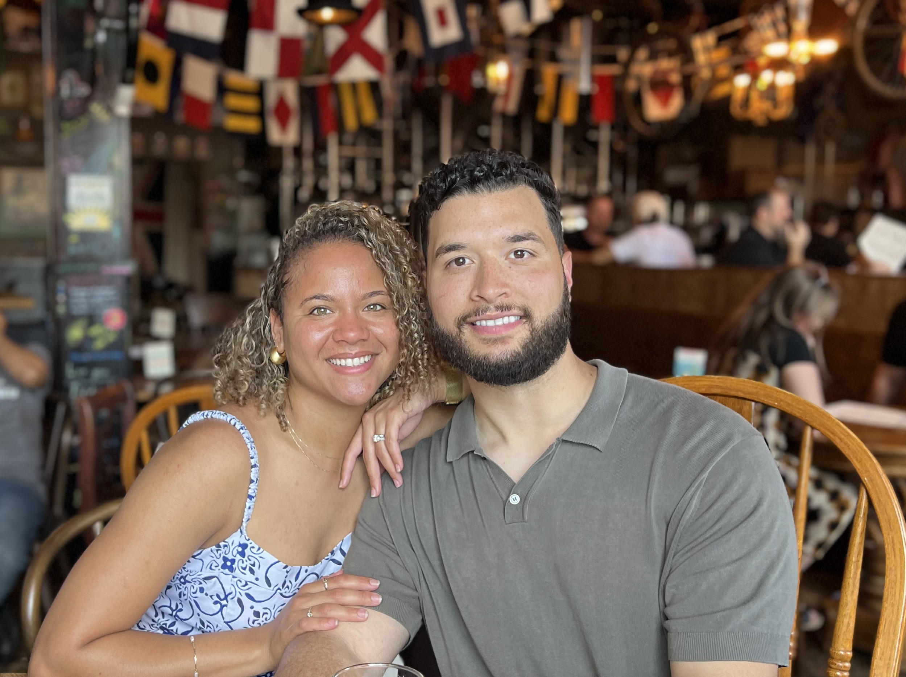

Residential Window Cleaning
Interior and exterior glass cleaning, with screens, tracks and sills handled as supporting details when requested.
Explore residential →Professional window cleaning for homes and businesses, delivered with the personal care of a local husband-and-wife team.
Three core services, each with its own dedicated page so visitors can quickly understand what we do and request the right quote.
Interior and exterior glass cleaning, with screens, tracks and sills handled as supporting details when requested.
Explore residential →Professional cleaning for storefronts, offices and small commercial properties, including recurring maintenance.
Explore commercial →Gentle purified-water cleaning designed to remove dirt and buildup without harsh chemicals.
Explore solar →Villa Window Washing stays intentionally personal. No call center, no rotating crews, and no complicated handoffs — just careful work and straightforward communication.

Tell us about your property and the service you need. We’ll follow up with a straightforward, no-obligation quote.